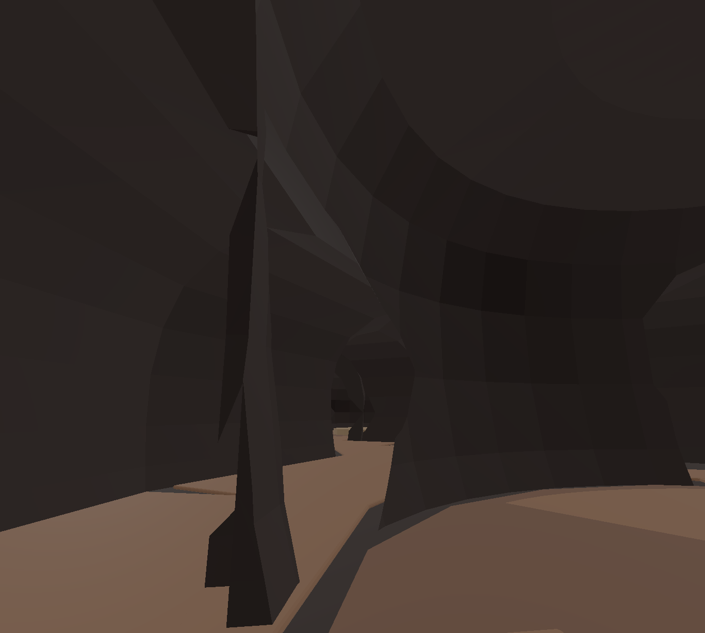
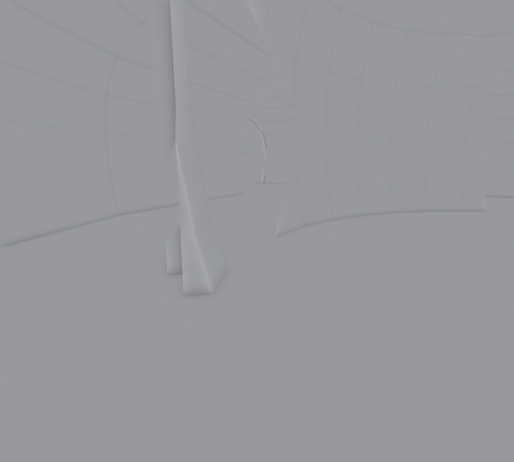

Your capture, and the same shell rendered from the same eye, yaw, pitch, fov and aspect. The render loads the shipped GLB, hides every dressing object, and paints the world background magenta, so any opening to the outside would be unmistakable.

?shell=bare, 2026-08-10T22:19:04Z
| Check | Result | Reading |
|---|---|---|
| Boundary edges, welded (.blend) | 0 | Watertight at the source |
| Holes, welded (.blend) | 0 | No torn surface |
| Non-manifold edges | 3 | Trivial; not a visible opening |
| Outer wall coverage y=±23.8, z=−1.4/11.5 | 100% | Sealed |
| Outer wall coverage x=±30.8 | 14.3 / 14.9 m² open | The Water and Earth doorways — cut on purpose |
| Background visible from your pose | none | Nothing opens to the outside here |
| Same render, backface culling on | identical | No flipped normals |
My earlier count of 1,160 holes was wrong and I have thrown it out: glTF splits vertices per face for flat shading, so an unwelded import reports the whole mesh as boundary. Welded, the shell is closed.
Three courts and the corridors between them. Rock is the field; the voids are the outlines.